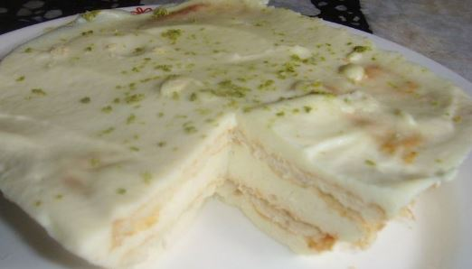

RECETA DEL POSTRE DE TRES LECHES

INGREDIENTES
- 1 taco galletas ducales
- 1 lata de crema de leche
- 1 lata de leche condensada
- 400gr de leche entera
- Ralladura de limón para decorar
PREPARACIÓN
- En un recipiente acomodar las galletas de tal forma que cubran toda la base y lleguen hasta
la parte de arriba del mismo
- En un bowl, mezclar la crema de leche, la leche condensada y la leche.
- Bañar las galletas con la mezcla de las leches.
- Llevar a refrigeración durante al menos media hora y antes de servir, cubrir o decorar con
la ralladura de limón.
Ir a enlaces de interés
Ir a mis imagenes